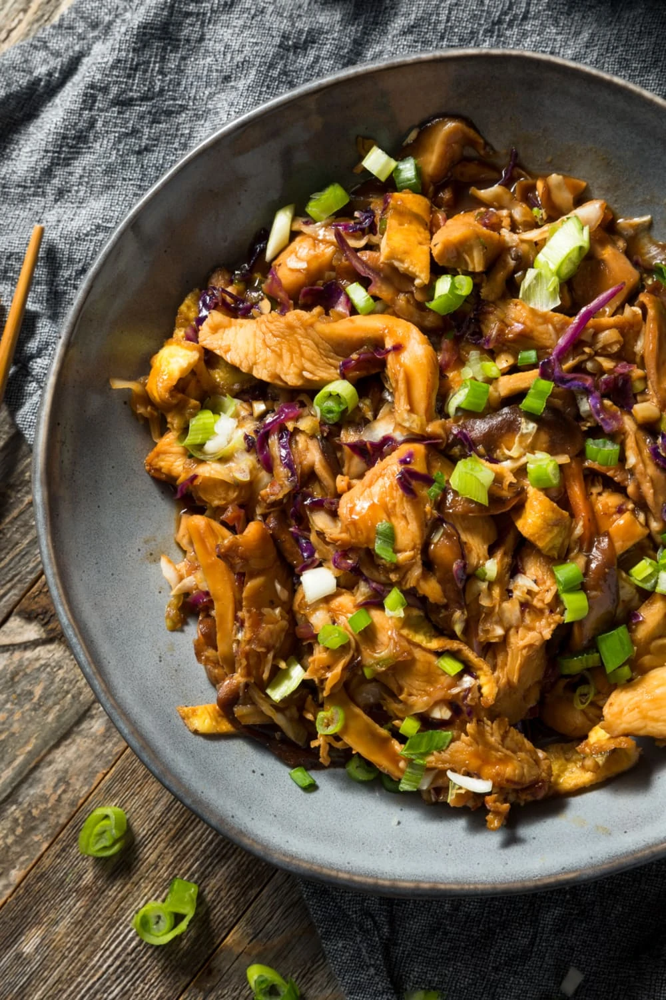

Moo Shu

Description
This homemade moo shu chicken is a hundred times better than takeout! Serve it once, and your family will beg you
to make it again and again.
This colorful Chinese stir fry is fully loaded with crunchy vegetables, juicy chicken, and fluffy scrambled eggs
Ingredients
- 6 tablespoons cold water, divided
- 3 teaspoons sesame oil, divided
- 2 teaspoons cornstarch
- 1 pound chicken breast tenderloins, sliced into thin strips
- 2 tablespoons hoisin sauce
- 2 tablespoons oyster sauce
- 2 teaspoon soy sauce
- 2 teaspoons vegetable oil, divided
- 2 eggs, beaten
- 3 cups shredded cabbage or coleslaw mix
- 1 (4-ounce) can sliced shiitake mushrooms, drained
- 2 cloves garlic, minced
- 1 tablespoon sherry
- 3 green onions, chopped
Steps
- In a large bowl, whisk together 2 tablespoons of water, 2 teaspoons of sesame oil, and cornstarch until
dissolved. Add the chicken and toss to coat. Set aside to marinate.
- In a small bowl, whisk together the 4 remaining tablespoons of water, the remaining 1 teaspoon of sesame
oil, hoisin sauce, oyster sauce, and soy sauce until well-combined. Set aside.
- Heat 1 teaspoon of vegetable oil in a large skillet over medium heat. Pour the beaten eggs and cook for 3
minutes. Flip it over and cook for 3 minutes more, or until set. Slice scrambled eggs into thin strips.
- To the same skillet over medium-high heat, add the chicken strips. Cook for 6 minutes on one side and flip.
Cook for 6 more minutes, or until golden brown and juices run clear. Remove from the skillet and set aside.
- Heat the remaining teaspoon of vegetable oil in the same skillet over medium-high heat. Add the shredded
cabbage, drained shiitake mushrooms, garlic, and sherry. Cook, stirring regularly until the cabbage starts
to wilt, about 2 minutes.
- Add the chicken, eggs, and sauce mixture. Stir until sauce has thickened, about 5 minutes. Remove from heat.
Mix in the green onions and serve immediately. Enjoy!
Save yourself some time and just get a bag of coleslaw mix instead of chopping or shredding cabbage. Try to get a
multi-colored slaw mix for a more appetizing dish.
Button mushrooms and cremini mushrooms will work, too. You could even use portobello and leave out the chicken
for a vegetarian dish.
This article doesn’t include a recipe for Mandarin pancakes because there’s no need to make them from scratch!
These paper-thin crepes are available at Asian grocery stores. And even if you can’t find them, you can always
count on flour tortillas.